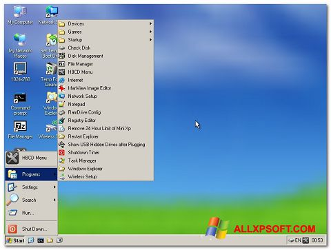

Hiren's Boot
Hiren's BootCD, também conhecido como Hiren's Boot, é uma ferramenta de diagnóstico e recuperação muito popular no campo da manutenção de computadores. No entanto, é importante notar que minha última atualização de conhecimento foi em setembro de 2021, e algumas informações podem ter mudado desde então.
O Hiren's BootCD é uma imagem de disco inicializável que contém uma variedade de utilitários e ferramentas destinadas a resolver problemas e realizar tarefas de manutenção em sistemas operacionais. Ele foi originalmente criado por Hiren Pankaj em formato CD, mas ao longo do tempo, a versão bootável também foi adaptada para USB e outras mídias.
As principais funcionalidades do Hiren's BootCD incluem:
Diagnóstico de Hardware: A ferramenta oferece utilitários para testar e diagnosticar componentes de hardware, como memória RAM, disco rígido, processador e outros.
Recuperação de Dados: O Hiren's BootCD contém ferramentas que podem ajudar a recuperar arquivos e dados de unidades de armazenamento danificadas ou corrompidas.
Clonagem e Backup de Disco: Oferece ferramentas para criar cópias de segurança de discos ou partições, bem como para clonar discos rígidos inteiros.
Ferramentas de Particionamento: Inclui utilitários para gerenciar partições de disco, redimensionar, criar e excluir partições.
Recuperação de Senhas: Oferece ferramentas que podem ajudar a redefinir senhas de contas de usuário em sistemas operacionais.
Antivírus e Antimalware: O Hiren's BootCD inclui utilitários antivírus e antimalware que podem ser usados para escanear e limpar sistemas de infecções por vírus e malware.
Gerenciamento de Disco e Arquivos: Inclui utilitários para manipular arquivos, como exploradores de arquivos, ferramentas de formatação e gestão de discos.
Utilitários de Rede: Fornece ferramentas para diagnosticar e resolver problemas de rede, bem como para configurar conexões de rede.
Lembre-se de que o Hiren's BootCD contém uma variedade de ferramentas de terceiros e é uma ferramenta poderosa. No entanto, seu uso deve ser feito com cuidado, uma vez que algumas ações podem causar perda de dados ou danos ao sistema se usadas de maneira incorreta.
Baixar Iso Hiren's Boot